|
Lawless
Mind
Abelson, Raziel 209 pp • 5x8 • Fall
1988
cloth 978-0-87722-579-9
|
|
The
Metaphysics of Self and World
Toward a Humanistic Philosophy
Adams, E. M. me
325 pp • 6x9 • Spring
1991
cloth 978-0-87722-784-7 |
 |
Religion
and Cultural Freedom
Adams, E. M. 208 pp • 6x9 • Fall
1993
cloth 978-1-56639-051-4
|
 |
Impure
Thoughts
Essays on Philosophy, Feminism, and Ethics
Addelson, Kathryn Pyne 257 pp • 5.5x8.25
• Fall 1990
paper 978-0-87722-960-5
cloth 978-0-87722-753-3 |
 |
Natural
Signs
A Theory of Intentionality
Addis, Laird 199 pp • 6x9 • Fall
1989
cloth 978-0-87722-631-4
|
| 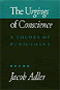 |
The
Urgings of Conscience
A Theory of Punishment
Adler, Jacob 316 pp • 6x9 • Fall
1991
cloth 978-0-87722-826-4
|
 |
Rethinking
College Athletics
edited by Andre, Judith and David N. James 257
pp • 6x9 • Fall 1990
paper 978-1-56639-002-6
cloth 978-0-87722-716-8
|

|
Against Capital in the Twenty-First Century
A Reader of Radical Undercurrents
edited by Asimakopoulos, John and Richard Gilman-Opalsky
390 pp • 6x9 • Fall 2017
paper 978-1-4399-1358-1
cloth 978-1-4399-1357-4
|
 |
Schopenhauer
The Human Character
Atwell, John E. 259 pp • 5x8 • Fall
1990
cloth 978-0-87722-748-9
|
 |
A
Moral Military
Revised and Expanded Edition
Axinn,
Sydney
256 pp • 6x9 • Fall 2008
paper 978-1-59213-958-3
cloth 978-1-59213-957-6
|

|
The Borders of Justice
edited by Balibar, �tienne, Sandro Mezzadra and Ranabir Samaddar
224 pp • 6x9 • Fall 2011
paper 978-1-4399-0686-6
cloth 978-1-4399-0685-9
|
 |
Animal
Passions and Beastly Virtues
Reflections on Redecorating Nature
Bekoff, Marc, foreword by Jane Goodall 320
pp • 6x9 • Fall 2005
paper 978-1-59213-348-2
cloth 978-1-59213-347-5
|
 |
Reconstructing
Prehistory
Scientific Method in Archaeology
Bell, James A. 368 pp • 6x9 • Spring
1994
paper 978-1-56639-160-3
cloth 978-1-56639-159-7
|
 |
Justifying
Law
The Debate over Foundations, Goals, and Methods
Belliotti, Raymond A. 312 pp • 6x9 •
Spring 1992
paper 978-1-56639-203-7
cloth 978-0-87722-818-9 |
 |
Knowledge for Social Change
Bacon, Dewey, and the Revolutionary Transformation of Research Universities in the Twenty-First Century
Benson, Lee, Ira Harkavy, John Puckett, Matthew Hartley, Rita A. Hodges, Francis E. Johnston, and Joann Weeks
206 pp • 6x9 • Spring 2017
paper 978-1-4399-1519-6
cloth 978-1-4399-1518-9
|
|
Art
and Engagement
Berleant, Arnold 288 pp • 6x9 •
Spring 1991
paper 978-1-56639-084-2
cloth 978-0-87722-797-7 |
 |
Aesthetics
of Environment
Berleant, Arnold 256 pp • 6x9 •
Fall 1992
paper 978-1-56639-334-8
cloth 978-0-87722-993-3
|
 |
Earth
Muse
Feminism, Nature, and Art
Bigwood, Carol 320 pp • 6x9 • Fall
1992
paper 978-0-87722-987-2
cloth 978-0-87722-986-5 |
 |
Gay
and Lesbian Politics
Sexuality and the Emergence of a New Ethic
Blasius, Mark 240 pp • 5.5x8.25 •
Fall 1994
paper 978-1-56639-174-0
cloth 978-1-56639-173-3 |
 |
Suspect Citizens
Women, Virtue, and Vice in Backlash Politics
Boryczka, Jocelyn M.
216 pp • 5.5x8.25 • Fall 2012
paper 978-1-4399-0894-5
cloth 978-1-4399-0893-8
|
 |
Skepticism
and Political Participation
Botwinick, Aryeh 256 pp • Fall 1989
cloth 978-0-87722-657-4 |
 |
Ethical
Issues in Government
edited by Bowie, Norman E. 325 pp • Spring
1981
cloth 978-0-87722-165-4 |
| 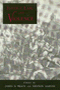 |
Justice,
Law, and Violence
edited by Brady, James B. and Newton Garver 368
pp • Fall 1991
cloth 978-0-87722-843-1 |
 |
Knowledge
and Values in Social and Educational Research
edited by Bredo, Eric and Walter Feinberg
paper 978-0-87722-245-3
cloth 978-0-87722-242-2
|
 |
Marx,
Reason, and the Art of Freedom
Brien, Kevin M. 288 pp • Spring 1987
cloth 978-0-87722-466-2 |
 |
The Concept of the Social in Uniting the Humanities and Social Sciences
Brown, Michael E.
538 pp • 6x9 • Spring 2014
paper 978-1-4399-1016-0
cloth 978-1-43991-015-3
|

|
Resentment's Virtue
Jean Am�ry and the Refusal to Forgive
Brudholm, Thomas, foreword by Jeffrie Murphy
256 pp • 6x9 • Fall 2007
paper 978-1-59213-567-7
cloth 978-1-59213-566-0
|
|
Work,
Inc.
A Philosophical Inquiry
Byrne, Edmund F. 360 pp • Spring 1990
paper 978-0-87722-957-5
cloth 978-0-87722-688-8 |

|
From Warism to Pacifism
A Moral Continuum
Second Edition
Cady, Duane L.
170 pp • 5.5x8.25 • Fall 2010
paper 978-1-4399-0312-4
cloth 978-1-4399-0311-7
|
|
Affirmative
Action and the University
A Philosophical Inquiry
edited by Cahn, Steven M. 320 pp • 6x9
• Spring 1993
paper 978-1-56639-399-7
cloth 978-1-56639-030-9 |
 |
Moral Problems in Higher Education
edited by Cahn, Steven M.
264 pp • 6x9 • Spring 2011
paper 978-1-4399-0659-0
cloth 978-1-4399-0658-3
|
| 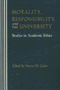 |
Morality,
Responsibility, and the University
Studies in Academic Ethics
edited by Cahn, Steven M. 288 pp • Fall
1990
paper 978-0-87722-959-9
cloth 978-0-87722-646-8 |
 |
The
Unnatural Lottery
Character and Moral Luck
Card, Claudia 232 pp • 5.5x8.25 •
Fall 1996
paper 978-1-56639-453-6
cloth 978-1-56639-452-9
|
 |
I
Remember Julia
Voices of the Disappeared
Carlson, Eric Stener 240 pp • 5.5x8.25
• Spring 1996
paper 978-1-56639-437-6
cloth 978-1-56639-430-7
|
|
The
Elements of Metaphysics
Carter, William R. 208 pp • Fall 1989
cloth 978-0-87722-619-2 |
|
More
Speech
Dialogue Rights and Modern Liberty
Chevigny, Paul
228 pp • Fall 1987
cloth 978-0-87722-514-0 |
 |
Two
Paths Toward Peace
Child, James W. and Donald Scherer 271 pp
• Fall 1991
cloth 978-0-87722-882-0 |
 |
Elie
Wiesel and the Politics of Moral Leadership
Chmiel, Mark 248 pp • 6x9 • Spring
2001
cloth 978-1-56639-857-2
|
 |
Connection
on the Ice
Environmental Ethics in Theory and Practice
Clayton, Patti H., photographs by Charles Mason 352
pp • 6x9 • Spring 1998
paper 978-1-56639-616-5
cloth 978-1-56639-615-8
|
 |
AIDS
Crisis in Professional Ethics
edited by Cohen, Elliot D. and Michael Davis 288
pp • 6x9 • Spring 1994
paper 978-1-56639-165-8
cloth 978-1-56639-164-1 |
| 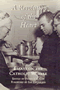 |
A
Revolution of the Heart
Essays on the Catholic Worker
edited by Coy, Patrick G., foreword by Jim Douglass 408
pp • Spring 1988
cloth 978-0-87722-531-7 |
 |
The Man-Not
Race, Class, Genre, and the Dilemmas of Black Manhood
Curry, Tommy J.
294 pp • 6x9 • Spring 2017
paper 978-1-4399-1486-1
cloth 978-1-4399-1485-4
|
 |
Self-Determination without Nationalism
A Theory of Postnational Sovereignty
Dahbour, Omar
272 pp • 6x9 • Fall
2012
paper 978-1-4399-0075-8
cloth 978-1-4399-0074-1
|
 |
Eyes
Without Country
Searching for a Palestinian Strategy of Liberation
Dajani, Souad R. 256 pp • 6x9 •
Fall 1994
paper 978-1-56639-241-9
cloth 978-1-56639-240-2 |
 |
Myth
and Modern Philosophy
Daniel, Stephen H. 256 pp • Fall 1989
cloth 978-0-87722-644-4 |
| 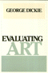 |
Evaluating
Art
Dickie, George 208 pp • Spring 1989
paper 978-0-87722-683-3
cloth 978-0-87722-597-3 |
 |
Artifacts,
Art Works, and Agency
Dipert, Randall R. 288 pp • 6x9 •
Fall 1992
cloth 978-0-87722-990-2 |
 |
Identifying Consumption
Subjects and Objects in Consumer Society
Dunn, Robert G.
248 pp • 5.5x8.25 • Spring 2008
paper 978-1-59213-870-8
cloth 978-1-59213-869-2
|

|
Toward a Pragmatist Sociology
John Dewey and the Legacy of C. Wright Mills
Dunn, Robert G.
190 pp • 5.5x8.25 • Fall 2017
cloth 978-1-4399-1459-5
|
|
Critique
of Applied Ethics
Reflections and Recommendations
Edel, Abraham, Elizabeth Flower and Finbarr W. O’Connor
288 pp • 6x9 • Spring 1994
paper 978-1-56639-158-0
cloth 9781-56639-157-3 |
 |
Morality,
Philosophy, and Practice
Historical and Contemporary Readings and Studies
edited by Edel, Abraham, Elizabeth Flower and Finbarr W. O’Connor
620 pp • Fall 1988
cloth 978-0-87722-591-1 |
 |
The
Struggle for Academic Democracy
Lessons from the 1938 Revolution in New York's City Colleges
Edel, Abraham 240 pp • Spring 1990
cloth 978-0-87722-691-8 |
| 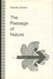 |
The
Passage of Nature
Emmet, Dorothy 208 pp • Fall 1991
cloth 978-0-87722-896-7 |
|
Normative
Politics and the Community of Nations
Fain, Haskell 272 pp • Spring 1987
cloth 978-0-87722-476-1 |

|
The
Promise of World Order
Essays in Normative International Relations
Falk, Richard 336 pp • Fall 1987
cloth 978-0-87722-517-1 |
 |
Heidegger
and Nazism
Far�as, Victor, edited by Joseph Margolis and Tom Rockmore
368 pp • 6x9 • Fall 1989
paper 978-0-87722-830-1
cloth 978-0-87722-640-6
|
|
Perceiving
Artworks
Fisher, John Fall 1980
cloth 978-0-87722-164-7 |

|
The Textures of Time
Agency and Temporal Experience
Flaherty, Michael G.
192 pp • 6x9 • Fall 2010
paper 978-1-4399-0263-9
cloth 978-1-4399-0262-2
|
 |
Deep
Vegetarianism
Fox, Michael Allen 234 pp • 5.5x8.25
• Spring 1999
paper 978-1-56639-705-6
cloth 978-1-56639-704-9
|
|
Introduction
to Animal Rights
Your Child or the Dog?
Francione, Gary L., foreword by Alan Watson 272
pp • 6x9 • Fall 2000
paper 978-1-56639-692-9
cloth 978-1-56639-691-2
|
 |
Civilized
Body
Social Domination, Control, and Health
Freund, Peter E. S. 166 pp • Fall 1982
cloth 978-0-87722-285-9 |
 |
The Next Social Contract
Animals, the Anthropocene, and Biopolitics
Gabardi, Wayne
242 pp • 6x9 • Spring 2017
paper 978-1-4399-1412-0
cloth 978-1-4399-1411-3
|
 |
Thinking Your Way to Freedom
A Guide to Owning Your Own Practical Reasoning
Gardner,
Susan T., illustrations by Dirk van Stralen
296 pp • 8.5x11 • Fall 2008
paper 978-1-59213-867-8
|
 |
Beyond
Morality
Garner, Richard 424 pp • 6x9 • Fall
1993
paper 978-1-56639-108-5
cloth 978-1-56639-076-7 |
 |
Derrida
and Wittgenstein
Garver, Newton and Seung-Chong Lee 264 pp
• 5.5x8.25 • Spring 1994
paper 978-1-56639-374-4
cloth 978-1-56639-172-6 |
 |
Cuttin'
the Body Loose
Historical, Biological, and Personal Approaches to Death and Dying
Gavin, William Joseph 256 pp • 5.5x8.25
• Spring 1995
paper 978-1-56639-298-3
cloth 978-1-56639-297-6 |
|
William
James and the Reinstatement of the Vague
Gavin, William Joseph 240 pp • 5.5x8.25
• Fall 1992
cloth 978-0-87722-946-9 |
 |
Evil
and the Evidence for God
The Challenge of John Hick’s Theodicy
Geivett, R. Douglas, afterword by John Hick 288
pp • 6x9 • Fall 1993
paper 978-1-56639-397-3
cloth 978-1-56639-094-1
|
| 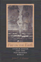 |
Fire
on the Earth
Anselm Kiefer and the Postmodern World
Gilmour, John C. 272 pp • Spring 1990
paper 978-0-87722-962-9
cloth 978-0-87722-690-1 |
 |
Jewish
Identity
edited by Goldberg, David Theo and Michael Krausz 344
pp • 6x9 • Spring 1993
paper 978-1-56639-040-8
cloth 978-1-56639-039-2 |
 |
Drawing
the Line
Life, Death, and Ethical Choices in an American Hospital
Gorovitz, Samuel 216 pp • 5.75x8.5 •
Fall 1993
paper 978-1-56639-149-8 |
| 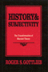 |
History
and Subjectivity
The Transformation of Marxist Theory
Gottlieb, Roger S. 336 pp • Fall 1987
cloth 978-0-87722-494-5 |
 |
Radical
Philosophy
Tradition, Counter-Tradition, Politics
edited by Gottlieb,
Roger S.
304 pp •
6x9 • Spring 1993
paper 978-1-56639-047-7
cloth 978-1-56639-046-0 |
 |
Person
to Person
edited by Graham, George and Hugh LaFollette 336
pp • Fall 1988
cloth 978-0-87722-576-8 |

|
Earthly Plenitudes
A Study on Sovereignty and Labor
Gulli, Bruno
200 pp • 6x9 • Fall 2009
paper 978-1-59213-980-4
cloth 978-1-59213-979-8
|
|
Labor
of Fire
The Ontology of Labor between Economy and Culture
Gull�, Bruno 232 pp • 6x9 • Fall
2005
paper 978-1-59213-113-6
cloth 978-1-59213-112-9
|
 |
An
Essay on African Philosophical Thought
The Akan Conceptual Scheme
Gyekye, Kwame 296 pp • 5.5x8.25 •
Fall 1995
paper 978-1-56639-380-5
cloth 978-1-56639-383-6
|
 |
Integrity
A Philosophical Inquiry
Halfon, Mark S. 192 pp • Spring 1989
cloth 978-0-87722-605-5 |
 |
The
Philosophy of Alain Locke
Harlem Renaissance and Beyond
edited by Harris, Leonard 344 pp • Fall
1988
paper 978-0-87722-829-5
cloth 978-0-87722-584-3 |
 |
Jews
and Gender
Responses to Otto Weininger
edited by Harrowitz, Nancy A. and Barbara Hyams 352
pp • 6x9 • Fall 1994
paper 978-1-56639-249-5
cloth 978-1-56639-248-8
|
| 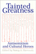 |
Tainted
Greatness
Antisemitism and Cultural Heroes
edited by Harrowitz, Nancy A. 328 pp •
6x9 • Spring 1994
paper 978-1-56639-161-0
cloth 978-1-56639-153-5
|
 |
Retribution
Evil for Evil in Ethics, Law, and Literature
Henberg, Marvin 288 pp • Fall 1990
cloth 978-0-87722-724-3 |
 |
Faith,
Reason, and Skepticism
edited by Hester, Marcus 192 pp • Fall
1991
cloth 978-0-87722-853-0 |
| 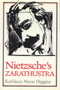 |
Nietzsche's
Zarathustra
Higgins, Kathleen Marie 328 pp • Fall
1987
paper 978-0-87722-687-1
cloth 978-0-87722-482-2 |
|
The
Music of Our Lives
Higgins, Kathleen Marie 288 pp • Fall
1990
cloth 978-0-87722-756-4 |
 |
Afterimage
Film, Trauma, and the Holocaust
Hirsch, Joshua 232 pp • 6x9 • Fall
2003
paper 978-1-59213-209-6
cloth 978-1-59213-208-9
|
 |
Morte
d'Author
An Autopsy
Hix, H. L. 224 pp • Fall 1990
cloth 978-0-87722-734-2 |
| 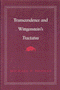 |
Transcendence
and Wittgenstein's Tractatus
Hodges, Michael P. 172 pp • Spring 1990
cloth 978-0-87722-692-5 |
| 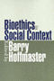 |
Bioethics
in Social Context
edited by Hoffmaster, Barry 248 pp •
6x9 • Fall 2000
paper 978-1-56639-845-9
cloth 978-1-56639-844-2
|
 |
If
You Tame Me
Understanding Our Connection with Animals
Irvine, Leslie, foreword by Marc Bekoff 240
pp • 6x9 • Spring 2004
paper 978-1-59213-241-6
cloth 978-1-59213-240-9
|

|
Filling the Ark
Animal Welfare in Disasters
Irvine, Leslie
176 pp • 5.5x8.25 • Spring 2009
cloth 978-1-59213-1829-0
|
 |
Intention
and Interpretation
edited by Iseminger, Gary 304 pp • 6x9
• Fall 1992
paper 978-1-56639-346-1
cloth 978-0-87722-971-1
|
 |
Women
Reading Women Writing
Self-Invention in Paula Gunn Allen, Gloria Anzald�a, and Audre
Lorde
Keating, AnaLouise 256 pp • 5.2x8.25
• Spring 1996
paper 978-1-56639-420-8
cloth 978-1-56639-419-2
|
 |
Sound
Sentiment
An Essay on the Musical Emotions
Kivy, Peter, foreword by Joseph Margolis 304
pp • Fall 1989
paper 978-0-87722-677-2
cloth 978-0-87722-641-3 |
|
Advice
and Planning
Krieger, Martin H. 230 pp • Spring 1981
cloth 978-0-87722-217-0 |
 |
Aesthetic
Legacies
Krukowski, Lucian 264 pp • 5.5x8.25 •
Fall 1992
cloth 978-0-87722-972-8 |

|
The Great Refusal
Herbert Marcuse and Contemporary Social Movements
edited by Lamas, Andrew T., Todd Wolfson, and Peter N. Funke
410 pp • 6x9 • Fall 2016
paper 978-1-4399-1304-8
cloth 978-1-4399-1303-1 |
 |
Color
and Consciousness
An Essay in Metaphysics
Landesman, Charles 149 pp • Spring 1989
cloth 978-0-87722-616-1 |
| 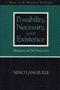 |
Possibility,
Necessity, and Existence
Abbagnano and His Predecessors
Langiulli, Nino 208 pp • 6x9 • Spring
1992
cloth 978-0-87722-921-6 |
 |
The
Underclass Question
edited by Lawson, Bill E., foreword by William Julius Wilson
232 pp • 6x9 • Spring 1992
paper 978-1-56639-062-0
cloth 978-0-87722-922-3 |
 |
The
Holocaust and Memory in the Global Age
Levy, Daniel and Natan Sznaider, translated by Assenka Oksiloff
240 pp • 5.5x8.25 • Fall 2005
paper 978-1-59213-276-8
cloth 978-1-59213-275-1
|
 |
Philosophy
in the Classroom
Lipman, Matthew, Ann Margaret Sharp and Frederick S. Oscanyan
240 pp • Spring 1985
paper 978-0-87722-183-8
|
|
Philosophy
Goes to School
Lipman, Matthew 250 pp • Spring 1988
paper 978-0-87722-555-3
cloth 978-0-87722-537-9 |
 |
Environmental
Ethics and Forestry
A Reader
edited by List, Peter C. 416 pp • 7x10
• Spring 2000
paper 978-1-56639-785-8
cloth 978-1-56639-784-1
|
 |
Surrogates
and Other Mothers
The Debates over Assisted Reproduction
Macklin, Ruth 264 pp • 6x9 • Spring
1994
paper 978-1-56639-180-1
cloth 978-1-56639-179-5
|
|
Philosophy
Looks at the Arts
Contemporary Readings in Aesthetics
edited by Margolis, Joseph 500 pp • Spring
1987
paper 978-0-87722-440-2
cloth 978-0-87722-439-6
|
| 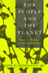 |
For
People and the Planet
Holism and Humanism in Environmental Ethics
Marietta, Jr., Don E., foreword by Holmes Rolston III 256
pp • 5.5x8.25 • Fall 1994
paper 978-1-56639-247-1
cloth 978-1-56639-246-4
|
 |
The City on the Hill from Below
The Crisis of Prophetic Black Politics
Marshall, Stephen
250 pp • 6x9 • Spring 2011
cloth 978-1-4399-0655-2
|
 |
Forms
in the Abyss
A Philosophical Bridge between Sartre and Derrida
Martinot, Steve
320 pp • 6x9 • Spring 2006
paper 978-1-59213-440-3
cloth 978-1-59213-439-7
|

|
Interfaith Dialogue at the Grass Roots
Preface by Leonard Swidler
Mays, Rebecca Kratz
142 pp • 6x9 • Spring 2009
paper 978-0-931214-11-0 |
|
Gratitude
McConnell, Terrance 288 pp • 5.5x8.25
• Spring 1993
cloth 978-1-56639-038-5 |
|
Time
and Experience
McInerney, Peter K. 224 pp • Fall 1990
paper 978-1-56639-010-1
cloth 978-0-87722-752-6 |
 |
Morality
and Human Nature
A New Route to Ethical Theory
McShea, Robert J. 240 pp • Fall 1990
cloth 978-0-87722-735-9 |

|
We Decide!
Theories and Cases in Participatory Democracy
Menser, Michael
360 pp • 6x9 • Fall 2017
paper 978-1-4399-1418-2
cloth 978-1-4399-1417-5
|

|
The Origins of Capitalism and the "Rise of the West"
Mielants, Eric H.
256 pp • 6x9 • Spring 2008
paper 978-1-59213-576-9
cloth 978-1-59213-575-2
|
| 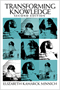 |
Transforming
Knowledge
Minnich, Elizabeth Kamarck
Second Edition
312 pp • 6x9 • Fall 2004
paper 978-1-59213-132-7
cloth 978-1-59213-131-0
|
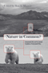 |
Nature in Common?
Environmental Ethics and the Contested Foundations of Environmental Policy
Minteer, Ben A.
312 pp • 6x9 • Spring 2009
paper 978-1-59213-704-6
cloth 978-1-59213-703-9
|

|
Refounding Environmental Ethics
Pragmatism, Principle, and Practice
Minteer, Ben A.
212 pp • 6x9 • Fall 2011
paper 978-1-4399-0084-0
cloth 978-1-4399-0083-3
|
 |
Elements
of Ethics
Moore, G. E., edited by Tom Regan 272 pp •
6x9 • Fall 1991
paper 978-1-59213-194-5
cloth 978-0-87722-770-0
|
 |
Values
and Value Theory in Twentieth-Century America
Essays in Honor of Elizabeth Flower
edited by Murphy,
Murray G. and Ivar Berg
308
pp • Fall 1988
cloth 978-0-87722-557-7 |
 |
Chanting
Down Babylon
The Rastafari Reader
edited by Murrell, N. Samuel, William D. Spencer and Adrian Anthony
McFarlane 467 pp • 7x10 • Fall 1998
paper 978-1-56639-584-7
cloth 978-1-56639-583-0
|
|
Sufficiency
of Hope
Conceptual Foundations of Religion
Muyskens, James L. 170 pp • Fall 1979
cloth 978-0-87722-162-3 |
 |
New
Soviet Thinking and U.S. Nuclear Policy
Myers, David B. 304 pp • Fall 1990
cloth 978-0-87722-710-6 |
|
The
Libertarian Idea
Narveson, Jan 416 pp • 6x9 • Fall
1988
paper 978-1-56639-008-8
cloth 978-0-87722-569-0 |
| 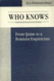 |
Who
Knows
From Quine to a Feminist Empiricism
Nelson, Lynn Hankinson 336 pp • 6x9 •
Fall 1989
paper 978-1-56639-007-1
cloth 978-0-87722-647-5 |
 |
Knowledge,
Fiction, and Imagination
Novitz, David 280 pp • Fall 1987
cloth 978-0-87722-480-8 |
|
Boundaries
of Art
Novitz, David 296 pp • 5.5x8.25 •
Fall 1992
cloth 978-0-87722-928-5 |
 |
The Muslim Question in Europe
Political Controversies and Public Philosophies
O�Brien, Peter
318 pp • 6x9 • Spring 2016
paper 978-1-4399-1277-5
cloth 978-1-4399-1276-8
|
 |
Moral
Freedom
Olen, Jeffrey 149 pp • Fall 1988
cloth 978-0-87722-578-2 |
 |
Heidegger
and Jaspers
edited by Olson, Alan M. 192 pp • 6x9
• Fall 1993
paper 978-1-56639-115-3
cloth 978-1-56639-114-6
|
 |
Money
for Change
Social Movement Philanthropy at the Haymarket People's Fund
Ostrander, Susan A. 256 pp • 5.5x8.25
• Fall 1995
paper 978-1-56639-364-5
cloth 978-1-56639-363-8 |
 |
Identity
Politics
Lesbian Feminism and the Limits of Community
Phelan, Shane 256 pp • Fall 1989
paper 978-0-87722-902-5
cloth 978-0-87722-651-2 |
| 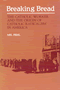 |
Breaking
Bread
The Catholic Worker and the Origin of Catholic Radicalism in America
Piehl, Mel 225 pp • Fall 1982
paper 978-0-87722-353-5
cloth 978-0-87722-257-6 |
 |
Hegel's
Dialectic
The Exploration of Possibility
Pinkard, Terry 272 pp • Fall 1988
cloth 978-0-87722-570-6 |
 |
Democratic
Liberalism and Social Union
Pinkard, Terry 240 pp • Spring 1987
cloth 978-0-87722-458-7 |
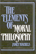
|
The
Elements of Moral Philosophy
Rachels, James 250 pp • Fall 1985
cloth 978-0-87722-405-1 |
|
Marx
on Religion
edited by Raines, John 256 pp • 6x9 •
Spring 2002
paper 978-1-56639-940-1
cloth 978-1-56639-939-5
|
 |
The
Early Essays
edited by Regan, Tom 248 pp • 6x9 •
Fall 1986
cloth 978-0-87722-442-6
|
 |
Animal
Sacrifices
Religious Perspectives on the Use of Animals in Science
edited by Regan, Tom, introduction by John Bowker 288
pp • Spring 1986
paper 978-0-87722-511-9
cloth 978-0-87722-411-2 |
 |
The
Thee Generation
Reflections on the Coming Revolution
Regan, Tom 176 pp • Fall 1990
paper 978-0-87722-772-4
cloth 978-0-87722-758-8 |
 |
Humility
Richards, Norvin 240 pp • 6x9 •
Fall 1992
cloth 978-0-87722-927-8 |

|
The Ethics of Care
A Feminist Approach to Human Security
Robinson, Fiona
200 pp • 5.5x8.25 • Fall 2011
paper 978-1-4399-0066-6
cloth 978-1-4399-0065-9
|
 |
Brains
and People
An Essay on Mentality and Its Causal Conditions
Robinson, William S. 248 pp • Spring
1988
cloth 978-0-87722-548-5 |
 |
Computers,
Minds, and Robots
Robinson, William S. 230 pp • 6x9 •
Spring 1992
paper 978-1-56639-082-8
cloth 978-0-87722-915-5 |
 |
The
Heidegger Case
On Philosophy and Politics
edited by Rockmore, Tom and Joseph Margolis 344
pp • 6x9 • Spring 1992
paper 978-0-87722-908-7
cloth 978-0-87722-907-0 |
 |
Antifoundationalism
Old and New
edited by Rockmore, Tom and Beth J. Singer 253
pp • Fall 1991
cloth 978-0-87722-881-3 |
| 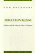 |
Irrationalism
Lukacs and the Marxist View of Reason
Rockmore, Tom 288 pp • Fall 1991
cloth 978-0-87722-867-7 |

|
Putting the Horse before Descartes
My Life's Work on Behalf of Animals
Rollin, Bernard E.
304 pp • 6x9 • Fall 2010
cloth 978-1-59213-825-8
|
 |
Environmental
Ethics
Duties to and Values in the Natural World
Rolston, III, Holmes 408 pp • Fall 1987
paper 978-0-87722-628-4
cloth 978-0-87722-501-0
|
 |
Reading
Rousseau in the Nuclear Age
Roosevelt, Grace G. 288 pp • Spring 1990
cloth 978-0-87722-679-6 |
 |
Beyond
Formalism
Naming and Necessity for Human Beings
Rosenberg, Jay F. 264 pp • 5.5x8.25 •
Fall 1993
cloth 978-1-56639-118-4
|
 |
Echoes
from the Holocaust
Philosophical Reflections on a Dark Time
edited by Rosenberg, Alan and Gerald E. Myers 472
pp • Spring 1988
paper 978-0-87722-686-4
cloth 978-0-87722-539-3 |
 |
Conversions
A Philosophic Memoir
Rosenthal, Abigail L. 296 pp • 6x9 •
Fall 1994
paper 978-1-56639-220-4
cloth 978-1-56639-219-8
|
 |
Unzipped
Genes
Taking Charge of Baby-Making in the New Millennium
Rothblatt, Martine 201 pp • 5.5x8.25
• Spring 1997
paper 978-1-56639-554-0
cloth 978-1-56639-522-9 |
 |
A Guilted Age
Apologies for the Past
Rushdy, Ashraf H. A.
244 pp • 6x9 • Fall 2015
paper 978-1-4399-1322-2
cloth 978-1-4399-1321-5 |

|
Higher Education and Democracy
Essays on Service-Learning and Civic Engagement
Saltmarsh, John and Edward A. Zlotkowski
416 pp • 6x9 • Fall 2010
cloth 978-1-4399-0037-6
|
 |
The
Right to Privacy
Gays, Lesbians, and the Constitution
Samar, Vincent J.
260 pp • Spring 1991
paper 978-0-87722-952-0
cloth 978-0-87722-796-0 |
 |
Bad
Faith, Good Faith, and Authenticity in Sartre's Early Philosophy
Santoni, Ronald E. 288 pp • 5.5x8.25
• Spring 1995
paper 978-1-56639-320-1
cloth 978-1-56639-319-5 |
 |
Morals,
Reason, and Animals
Sapontzis, S. F. 328 pp • Fall 1987
paper 978-0-87722-961-2
cloth 978-0-87722-493-8
|
|
Upstream/Downstream
Issues in Environmental Ethics
edited by Scherer, Donald 288 pp • Fall
1990
paper 978-1-56639-079-8
cloth 978-0-87722-747-2 |
|
The
Ethical Engineer
An 'Ethics Construction Kit' Places Engineering in a New Light
Schlossberger, Eugene 296 pp • 5.5x8.25
• Fall 1993
paper 978-1-56639-057-6
cloth 978-1-56639-056-9
|
 |
Moral
Responsibility and Persons
Schlossberger, Eugene 244 pp • Fall 1991
cloth 978-0-87722-879-0 |
 |
Against
Instinct
From Biology to Philosophical Psychology
Senchuk, Dennis M. 200 pp • Spring 1991
cloth 978-0-87722-815-8 |
 |
Studies
in Philosophy for Children
Harry Stottlemeier's Discovery
edited by Sharp, Ann Margaret and Ronald F. Reed 268
pp • Fall 1991
paper 978-0-87722-873-8
cloth 978-0-87722-872-1 |

|
The Phenomenology of Dance
Sheets-Johnstone, Maxine
Foreword by Merce Cunningham
152 pp • 5.5x8.25 • Spring 2015
paper 978-1-4399-1262-1
cloth 978-1-4399-1261-4 |
 |
The
Roots of Thinking
Sheets-Johnstone, Maxine 408 pp • Fall
1990
paper 978-0-87722-769-4
cloth 978-0-87722-711-3 |
 |
No
Longer Patient
Feminist Ethics and Health Care
Sherwin, Susan 280 pp • Fall 1991
paper 978-1-56639-061-3
cloth 978-0-87722-889-9
|
|
Obligations
to Future Generations
edited by Sikora, R. I. and Brian Barry 200
pp • Fall 1978
paper 978-0-87722-128-9
cloth 978-0-87722-132-6 |
 |
Gender
Thinking
Smith, Steven G. 384 pp • 6x9 •
Fall 1992
paper 978-0-87722-964-3
cloth 978-0-87722-963-6 |
|
The
Concept of the Spiritual
An Essay in First Philosophy
Smith, Steven G. 336 pp • Fall 1988
cloth 978-0-87722-553-9 |
 |
Camus
A Critical Examination
Sprintzen, David 336 pp • 6x9 •
Fall 1988
paper 978-0-87722-827-1
cloth 978-0-87722-544-7 |
| 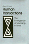 |
Human
Transactions
The Emergence of Meaning In Time
Stahl, Gary H. 232 pp • 6x9 • Spring
1995
cloth 978-1-56639-287-7 |
 |
It’s
Our Military, Too!
Women and the U.S Military
edited by Stiehm, Judith Hicks 352 pp •
6x9 • Fall 1996
paper 978-1-56639-456-7
cloth 978-1-56639-455-0
|
 |
Interpreting
Wittgenstein
A Cloud of Philosophy, a Drop of Grammar
Suter, Ronald 320 pp • Fall 1989
paper 978-0-87722-904-9
cloth 978-0-87722-664-2 |
 |
The
Study of Religion in an Age of Global Dialogue
Swidler, Leonard and Paul Mojzes 240 pp •
6x9 • Fall 2000
paper 978-1-56639-793-3
cloth 978-1-56639-792-6 |
| 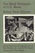 |
The
Moral Philosophy of G. E. Moore
Sylvester, Robert Peter, edited by Ray Perkins, Jr. and R. W. Sleeper,
foreword by Tom Regan 240 pp • Spring
1990
cloth 978-0-87722-645-1 |
 |
For
an Audience
Thom, Paul 256 pp • 6x9 • Fall 1992
cloth 978-0-87722-991-9 |
 |
Vessels
of Evil
American Slavery and the Holocaust
Thomas, Laurence Mordekhai
232 pp • 5.5x8.25
• Fall 1993
paper 978-1-56639-100-9
cloth 978-1-56639-093-4 |
 |
Living
Morally
A Psychology of Moral Character
Thomas, Laurence 278 pp • Spring 1989
paper 978-0-87722-778-6
cloth 978-0-87722-602-4 |
 |
The
Gold Standard
The Challenge of Evidence-Based Medicine and Standardization in
Health Care
Timmermans, Stefan and Marc Berg 280 pp •
6x9 • Spring 2003
paper 978-1-59213-188-4
cloth 978-1-59213-187-7
|
 |
Sudden
Death and the Myth of CPR
Timmermans, Stefan, foreword by Bern Shen 272
pp • 6x9 • Fall 1999
paper 978-1-56639-716-2
cloth 978-1-56639-715-5
|
 |
Transformations of Warfare in the Contemporary World
edited by Torpey, John and David Jacobson
192 pp • 5.5x8.25 • Spring 2016
paper 978-1-4399-1313-0
cloth 978-1-4399-1312-3
|
|
Presenting
Women Philosophers
edited by Tougas, Cecile T. and Sara Ebenreck 280
pp • 7x10 • Spring 2000
paper 978-1-56639-761-2
cloth 978-1-56639-760-5
|
 |
Health
Care Ethics
An Introduction
edited by VanDeVeer, Donald and Tom Regan Fall
1986
paper 978-0-87722-441-9 |

|
Unchopping a Tree
Verdeja, Ernesto
240 pp • 5.5x8.25 • Fall 2009
cloth 978-1-4399-0054-3
|
 |
Promising
Vitek, William 288 pp • 5.5x8.25 •
Fall 1993
cloth 978-1-56639-052-1 |
 |
Freedom
Without Responsibility
Waller, Bruce N. 256 pp • Fall 1990
cloth 978-0-87722-717-5 |
 |
The
Uncertainties of Knowledge
Wallerstein, Immanuel 224 pp • 5.5x8.25
• Spring 2004
paper 978-1-59213-243-0
cloth 978-1-59213-242-3
|
|
The
Forms of Power
From Domination to Transformation
Wartenberg, Thomas
E.
320 pp • Fall 1989
paper 978-0-87722-905-6
cloth 978-0-87722-648-2 |
 |
Nature's
Keeper
Wenz, Peter S. 240 pp • 5.5x8.25 •
Spring 1996
paper 978-1-56639-428-4
cloth 978-1-56639-427-7
|
 |
Abortion
Rights as Religious Freedom
Wenz, Peter S. 344 pp • Fall 1991
paper 978-0-87722-858-5
cloth 978-0-87722-857-8 |
 |
Back
to Earth
Tomorrow's Environmentalism
Weston, Anthony 216 pp • 5.5x8.25 •
Fall 1994
paper 978-1-56639-237-2
cloth 978-1-56639-236-5
|
 |
Toward
Better Problems
New Perspectives on Abortion, Animal Rights, the Environment,
and Justice
Weston, Anthony 204 pp • 5.5x8.25 •
Fall 1992
paper 978-0-87722-948-3
cloth 978-0-87722-947-6 |

|
Look, a White!
Philosophical Essays on Whiteness
Yancy, George
224 pp • 6x9 • Spring 2012
paper 978-1-4399-0854-9
cloth 978-1-4399-0853-2
|
 |
Hume's
'Inexplicable Mystery'
His Views on Religion
Yandell, Keith E. 352 pp • Fall 1989
paper 978-1-56639-089-7
cloth 978-0-87722-643-7 |
|
Race
and Mixed Race
Zack, Naomi 232 pp • 6x9 • Fall
1993
paper 978-1-56639-265-5
cloth 978-1-56639-064-4 |
 |
Bachelors
of Science
Seventeenth Century Identity, Then and Now
Zack, Naomi 264 pp • 6x9 • Spring
1996
paper 978-1-56639-436-9
cloth 978-1-56639-435-2 |
 |
Missing
Pieces
A Chronicle of Living with a Disability
Zola, Irving Kenneth, foreword by Nancy Mairs 258
pp • 5.8125x9 • Fall 2003
paper 978-1-59213-244-7
|